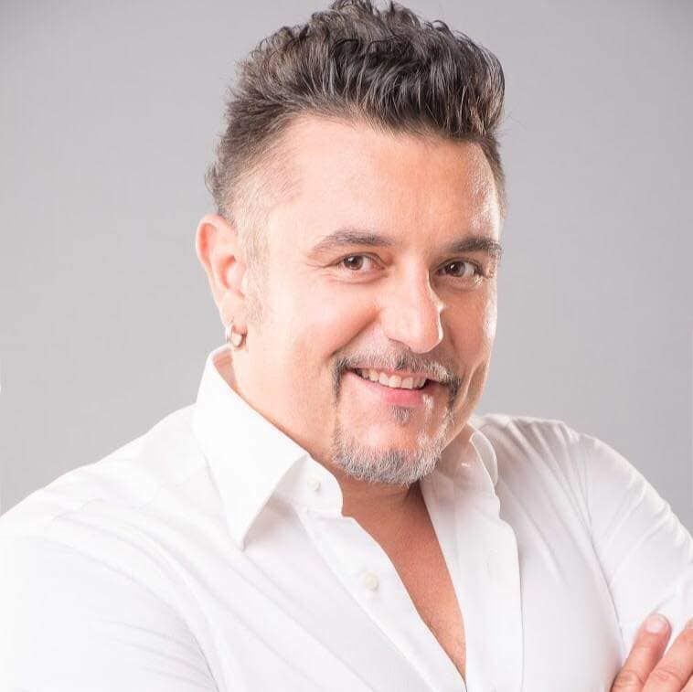
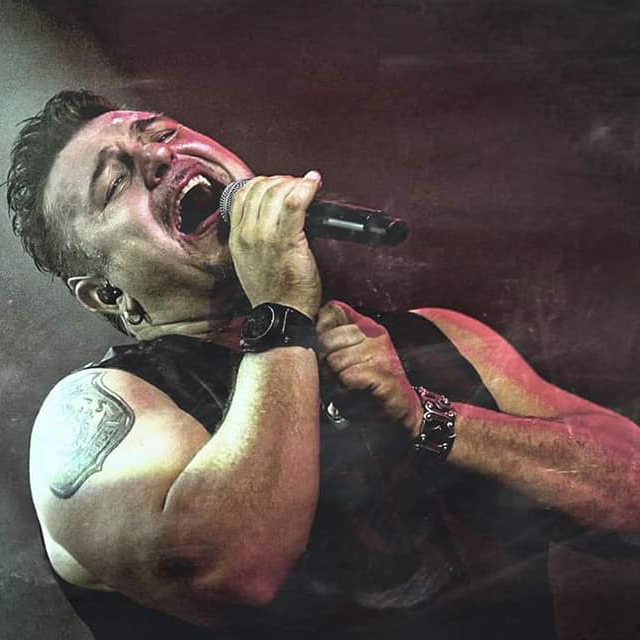

FELLÉPŐK




2019 márciusában lesz zenekarunk megalapításának 10. évfordulója.
Ennek alkalmából szeretnénk meginvitálni benneteket egy születésnapi buliba, amellyel a kalocsai állatmenhelyet támogatjuk.
Sztárvendég: SIPOS TAMÁS, az Irigy Hónaljmirigy és a Sing Sing zenekar énekese.
Egy egész estés műsorral készülünk nektek, amelynek menetrendje:
- 19:00 órától kapunyitás
- 20:00 órától a Szomszédok zenekar alapozza meg a hangulatot
- 21:00 órától 2 év után ismét kalocsai színpadon a No Limit zenekar
- 23:00 órától pedig a hangulatról rendezvényünk egyik fő támogatója, DJ GABEE gondoskodik
A rendezvényünk fővédnöke SIPOS TAMÁS, aki ezen az éjszakán egy kis időre a No Limit zenekar énekeseként lép színpadra.
Az est házigazdája: Magóné Tóth Gyöngyi
FIGYELEM! Jótékonysági rendezvényünkre MINDEN JEGY ELFOGYOTT!!!
Technikai okok miatt a HELYSZÍNEN NINCS LEHETŐSÉG jegyvásárlásra.
A továbbiakban csak abban az esetben tudunk kiadni jegyeket, ha valaki a jegyfoglalását visszamondta.
Megértéseteket köszönjük!
A támogatói jegyvásárlók között a rendezvényen értékes ajándékokat sorsolunk ki.